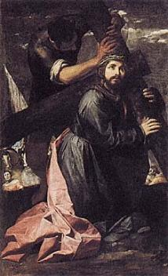
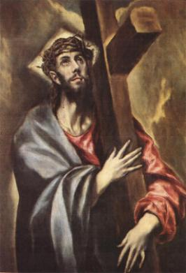
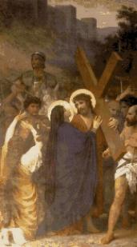
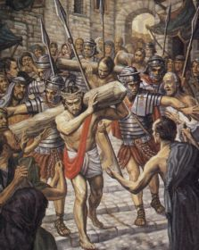
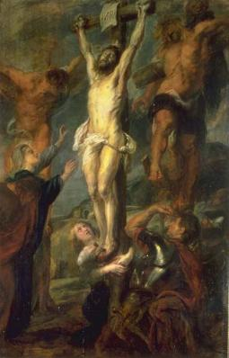
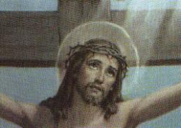

- A Cruz � um antigo instrumento b�rbaro de supl�cio, usado por v�rios
- A Cruz � um antigo instrumento b�rbaro de supl�cio, usado por v�rios
povos para executar os condenados a morte. - A Cruz � um antigo instrumento b�rbaro de supl�cio, usado por v�rios
Era constitu�da por uma haste vertical de aproximadamente 3 metros e meio de comprimento, denominada �estipe�, que era cravado 1 metro de profundidade no local da crucifica��o, e um pau horizontal chamado �pat�bulo�, que era transportado pelo condenado. No lugar determinado para a crucifica��o, colocavam o "pat�bulo" no ch�o e deitavam o r�u sobre ele, fixando os seus pulsos com cravos de ferro. A seguir, com forquilhas de madeira, levantavam o "pat�bulo" com o crucificado enganchavando na parte superior do "estipe" formando um "t�u" (T). As duas pe�as eram amarradas e unidas com cravos de ferro. A seguir, fixavam os p�s do condenado no "estipe", colocando um sobre o outro e ambos eram atravessados por um �nico cravo.
Este tipo de Cruz era o mais usado e chamava-se �Cruz Comissa�.


- Os condenados transportavam o pat�bulo nas costas, um grosso pau
com cerca 2,20 metros de comprimento, pesando aproximadamente 35 quilos, percorriam
a dist�ncia de mais ou menos 600 metros, que separava o Tribunal Romano na Fortaleza
Ant�nia do Calv�rio, em hebraico "G�lgota"
, tamb�m denominado lugar das Caveiras, onde eram
crucificados.
Muita gente, na maioria curiosa acompanhou o percurso de JESUS.
Alguns gritavam impreca��es e xingamentos, enquanto outros penalizados, choravam e lamentavam o seu sofrimento.
Numa ladeira cal�ada com pedras, com boa declividade, ELE trope�a e cai pela primeira vez, batendo o joelho esquerdo com for�a no piso, esfolando e ferindo-o, por causa do peso da Cruz.
Os soldados que O escoltavam, severos e cru�is, com os chicotes O for�aram a levantar-se e continuar a caminhada.
Nas ruas, por onde passava, a multid�o se espremia contra as paredes das casas, pois todos queriam avidamente presenciar os lances que aconteciam.
- No meio do povo estavam os Disc�pulos e as Santas Mulheres, que
tristes e cheias de pesar, acompanhavam o trajeto. ELE cansado fez uma pausa. Seu
Corpo estava coberto de feridas que sangravam abundantemente. Ao erguer a Face,
depara com o olhar triste e amargurado de Maria, sua M�e, que sofria e chorava ao
presenciar tanta torpeza e a desumanidade que faziam com ELE, sem que Ela
pudesse fazer alguma coisa para minorar as dores e o cansa�o de seu Divino
FILHO.

Agora passaram a porta de Efraim, um dos port�es de acesso � cidade de Jerusal�m, que era cercada por muros elevados.
A esta altura do percurso, muitas pessoas que j� conheciam aquelas cenas, debandaram.
O SENHOR estava t�o fraco e debilitado, pela noite mal dormida no Pret�rio, pela falta de alimenta��o e pelos maus tratos, que caminhou uma certa dist�ncia e caiu pela segunda vez.
Em sentido contr�rio vinha Sim�o que estava trabalhando no campo. Era natural de Cirene e por isso mesmo, tinha o apelido de �o cirineu�.
Os soldados observando que JESUS estava sucumbindo, obrigaram o cirineu a carregar a Cruz para ELE.
Junto ao SENHOR caminhavam dois outros condenados. Eram ladr�es que n�o tinham recebido o indulto de Pilatos.
Subindo o morro do Calv�rio, ELE viu ao lado do caminho diversas mulheres de Jerusal�m, que choravam e lamentavam a sua crucifica��o. Olhando para elas, disse:
�Filhas de Jerusal�m, n�o choreis por MIM; chorai, antes, por v�s mesmas e por vossos filhos! Pois, eis que vir�o dias em que se dir�: Felizes as est�reis, as entranhas que n�o conceberam e os seios que n�o amamentaram! Ent�o come�ar�o a dizer �s montanhas: Ca� sobre n�s! E as colinas: cobri-nos. Porque se fazem assim com o lenho verde, o que acontecer� com o seco?�(Lc 23,28-31)
ELE disse, que se faziam assim com o
�lenho verde�, que n�o
devia ser queimado, 
- Chegando ao Calv�rio, trope�a e cai pela terceira vez. Seu Corpo
j� n�o resistia mais qualquer esfor�o... Na companhia das Santas Mulheres, Maria
observava heroicamente aquele terr�vel drama de seu FILHO. Cada detalhe daquele
brutal espet�culo, a comovia de ang�stia e horror.
Ofegante, ELE permaneceu ca�do ao ch�o.
Algumas mulheres judias pesarosas e movidas de compaix�o com o sofrimento DELE, ofereceram-LHE de beber uma mistura de vinho e mirra, que tinha efeito entorpecente. (Mt 27,34)(Mc 15,23)
Mas ELE n�o quis.
O cirineu deixou a Cruz ao lado de JESUS, enquanto os soldados crucificavam os dois ladr�es.
- A seguir vieram at� JESUS, tiraram-LHE a t�nica e a veste �ntima e o deitaram sobre o madeiro, pregando primeiro a M�o direita, enfiando um
cravo de ferro com for�a, que atravessou o pulso e fixou seu bra�o no pat�bulo,
jorrando Sangue em quantidade pelos vasos sangu�neos dilacerados em face da
brusca penetra��o do cravo. Da mesma maneira pregaram a M�o esquerda.
�ntima e o deitaram sobre o madeiro, pregando primeiro a M�o direita, enfiando um
cravo de ferro com for�a, que atravessou o pulso e fixou seu bra�o no pat�bulo,
jorrando Sangue em quantidade pelos vasos sangu�neos dilacerados em face da
brusca penetra��o do cravo. Da mesma maneira pregaram a M�o esquerda.
Levantaram e fixaram um madeiro no outro, pregando com firmeza a jun��o dos p�us e depois, colocaram o P� direito DELE apoiado no "estipe" e encima, puseram o P� esquerdo, e Os atravessaram com um �nico cravo, ficando suas Pernas fixadas no pau vertical.
Agora, ELE estava definitivamente pregado a Cruz...
De seus Pulsos rasgados, saiam grande quantidade de Sangue que corria pelos bra�os em dire��o aos Ombros. Tamb�m das veias rompidas nos P�s escorria o precioso l�quido Divino, que descia e manchava o madeiro.
� direita de JESUS, Germa, um dos ladr�es crucificados com ELE, insultou-O e debochando de Seu poder Divino, falou:
�N�o �s TU o Messias? Salva-te a T� Mesmo e a n�s�.(Lc 23, 39)
Muito embora n�o tivesse respeito e nem acreditasse no SENHOR, provocou-O para que ELE fizesse alguma coisa, porque sabia que daquele jeito como estava pendurado na cruz, n�o havia solu��o, ia morrer mesmo, e ele queria a liberdade e a vida. Raciocinava que a �nica esperan�a era se ELE realmente �tivesse poderes� e resolvesse fazer um milagre, para salvar as suas vidas.
O outro ladr�o da esquerda, chamado Dimas, olhou para o companheiro e o censurou:
�Nem sequer temes a DEUS, estando na mesma condena��o? Quanto a n�s, � de justi�a; estamos pagando por nossos atos; mas ELE n�o fez nenhum mal.� E acrescentou: �JESUS, lembra-Te de mim, quando vieres com Teu Reino�.(Lc 23,40-42)
- O SENHOR respondeu: �Em
verdade, eu te digo, hoje estar�s comigo no Para�so�.(Lc 23,43)

Pilatos mandou fazer uma placa escrita em hebraico, latim e grego: �JESUS Nazoreu, o Rei dos judeus�.(Jo 19,19) E mandou fixa-la na Cruz, para que todos vissem o motivo da condena��o.
Transeuntes que passavam por ali, vendo a placa que Pilatos mandou fixar na Cruz de JESUS, injuriavam-NO e zombavam DELE.
As dores e as c�imbras causadas pela posi��o incomoda e pelo esfor�o em calcar os p�s contra o madeiro a fim de levantar o t�rax e poder respirar, aumentaram de modo dram�tico. Come�ava a agonia do SENHOR.
Apesar do cruel padecimento, com o Corpo coberto de chagas e as fei��es completamente deformadas, de seu olhar triste e cansado, transparecia uma amorosa express�o de resigna��o. Levantando a Cabe�a e buscando com o olhar a imensid�o do infinito, pronunciou:
�PAI, PERDOAI-LHES: N�O SABEM O QUE FAZEM�.(Lc 23, 34)
Apesar de estar sofrendo terrivelmente o drama da crucifica��o, JESUS encontrou for�as para perdoar a humanidade, principalmente �queles que LHE causaram tanto mal.
Em Jerusal�m, aproxim�vamos da nona hora (l5 horas). A lua cobriu os raios do sol, consumando um longo eclipse, que derramou trevas sobre toda aquela regi�o. Era como se a natureza escandalizada com aqueles atos mesquinhos e absurdos, estivesse triste, e lan�asse a escurid�o como forma de protesto, mostrando que estava enlutada pelas maldades e sofrimentos infligidos ao FILHO DE DEUS.
Embaixo da Cruz, estava Maria, sua M�E ao lado das Santas Mulheres e Jo�o, o Disc�pulo que ELE amava.
- Abrindo os olhos, fixou-os em Maria e disse:
�MULHER, EIS O TEU
FILHO!�(Jo 19, 26)
Referia-se a Jo�o Evangelista, o Disc�pulo
�amado�, que estava
ao lado de sua M�E. Com este procedimento o SENHOR estabeleceu
uma primeira corrente amorosa, de sentido descendente, ou seja, de cima para baixo.
Considera Jo�o representando toda humanidade. Assim, com o mesmo amor que amava
Jo�o, ELE agora revelava que tamb�m ama a humanidade inteira. Por isso, � desejo
DELE que todas as gera��es procurassem se inspirar no comportamento e na dedica��o
de Jo�o, assim como na sua fidelidade e no seu amor sincero, que demonstrou sem medo
dos judeus, at� no cruel momento da crucifica��o. Porque somente dessa maneira,
a humanidade mostrar� ao SENHOR que � agradecida pela Sua admir�vel e
ben�fica Obra e por sua fraterna e paternal amizade.
A seguir, agora olhando para Jo�o, ELE disse:
�EIS A TUA M�E!�
E mostrou-lhe Maria que estava ao seu lado.
Esta segunda corrente amorosa tem um
fluxo ascendente, ou seja, de baixo para cima. Jo�o o disc�pulo que o SENHOR
mais amava, continuava a representar a humanidade. Ent�o, JESUS fez uma
comunica��o preciosa: ELE nos deu a sua M�E! Maria repleta de gra�as pelo
CRIADOR, escolhida para M�E DE DEUS pelo Alt�ssimo, agora nos era dada
por ELE, para ser a M�e Espiritual da humanidade de todas as gera��es. Sem
d�vida, foi um presente admir�vel, o melhor de todos, afinal. Por outro lado,
como consequ�ncia dessa determina��o do SENHOR, Maria assumiu
verdadeiramente o dom de ser
"nossa M�e",
com o mesmo amor e ternura que dedicava a JESUS, passando a interceder
em nosso benef�cio junto a DEUS, ajudando, inspirando e protegendo todos
os seus filhos contra as  Assim sendo, para que as correntes
amorosas estabelecidas no testamento do FILHO DE DEUS funcionem
adequadamente, � necess�rio que apresentem um fluxo de utiliza��o intenso,
nos dois sentidos. Maria � nossa M�e, a Ela devemos recorrer em todas as
ocasi�es e nas dificuldades do cotidiano, a fim de que Ela junto de JESUS
alcance do CRIADOR as gra�as necess�rias ao nosso bem-estar, o que
sempre acontece quando invocamos a sua eficaz e t�o carinhosa prote��o.
Mas, de modo identico, devemos nos portar como filhos Dela, com dignidade,
cumulando-a de aten��es atrav�s de nossas ora��es e de uma ativa participa��o
nos eventos em sua honra, revelando a nossa fiel e sincera devo��o filial. Pois
s� assim, n�s e NOSSA SENHORA iremos atender o derradeiro desejo de
JESUS, sermos os filhos Dela e irm�os DELE. Considerando que Ela �
sempre pontual e nunca nos abandona, efetivamente vai depender de nosso
comportamento pessoal, se queremos seguir os passos do SENHOR.
�DEUS MEU, DEUS MEU,
PORQUE ME ABANDONASTE?�(Mt 27, 46)
Mas logo abaixou a cabe�a e silenciou, a exemplo
de como havia procedido no Gets�mani. L� ELE aceitou heroicamente todos os atos de
sua pris�o. Aqui tamb�m, na certeza de ter cumprido integralmente a Obra que o
PAI ETERNO lhe confiou, silenciou sua voz, aceitando morrer daquela maneira,
como se estivesse abandonado pelo CRIADOR.
�TENHO SEDE!�(Jo 19, 28) Um dos guardas, fixando uma esponja na
extremidade de sua lan�a, num gesto de compaix�o, molhou-a no vinagre contido
num recipiente que estava no ch�o e levantou at� os l�bios DELE. ELE n�o aceitou. Verdadeiramente a
�sede� de JESUS n�o
era de �gua, mas sede de amor e de justi�a, sede de maior compreens�o e toler�ncia
entre as pessoas, sede de harmonia para que exista uma conviv�ncia pac�fica no
mundo, sede de fidelidade e perseveran�a no caminho do �bem�. Somente saciando esta �sede� do SENHOR, a humanidade
conseguir� cumprir de modo digno a miss�o da vida que ELE nos confiou, encontrar�
a paz e a felicidade no cotidiano, e sentir� em sua exist�ncia a presen�a permanente e constante do SENHOR, inspirando as decis�es, dando discernimento
e sabedoria, protegendo contra as ciladas do maligno e infundindo disposi��o
no trabalho para a realiza��o de todos os empreendimentos.
E por fim, voltando a sua Divina Cabe�a em
dire��o ao nosso cora��o, despediu-se dizendo que havia terminado o ensinamento:
�ESTA TUDO CONSUMADO!�
(Jo 19, 30)
Hoje, ficamos impressionados ao lermos
a trajet�ria existencial do SENHOR, pela exatid�o de sua Obra, pela perseveran�a
em executa-la com tanta perfei��o e de maneira integral, assim como pela Sua
fidelidade ao PAI ETERNO e a profunda demonstra��o de seu amor abrangente a
humanidade de todas gera��es. Somente um DEUS cheio de bondade, com um
cora��o imenso, repleto de carinho e pleno de miseric�rdia, � que poderia sofrer um
mart�rio t�o severo e cruel, como JESUS sofreu!
S� um DEUS feito de amor e ternura, � que se
preocuparia em resgatar a humanidade que n�o O merece, porque as gera��es
sempre se portaram de modo infiel, insens�vel e atroz!
Por tudo isso, � imperioso reconhecermos a grandeza da
Obra do SENHOR em benef�cio de todos n�s e nos preocuparmos, apesar das nossas limita��es e
fraquezas, em retribuir-LHE de alguma forma, com ora��es e sacrif�cios, enriquecendo e
dilatando nossa consci�ncia crist�, ajudando aos necessitados e aqueles menos favorecidos,
tratando as pessoas como nossos irm�os em CRISTO, vendo em cada semelhante a
imagem querida de nosso DEUS e assim, empenhando sempre em buscar uma
forma de nos aproximarmos DELE, de cativarmos a sua amizade e ganharmos a sua ador�vel companhia. No Monte Calv�rio, JESUS exalava o seu derradeiro
suspiro. Voltando os olhos para o C�u, como se estivesse anunciando a sua
chegada, falou:
�PAI, EM TUAS M�OS
ENTREGO O MEU ESP�RITO�.(Lc 23, 46)
Pregado ao madeiro, numa posi��o incomoda,
JESUS desenvolveu um esfor�o incalcul�vel para manter-se vivo, for�ando os p�s
na haste vertical para levantar a caixa tor�cica e poder respirar, dando ao mundo
conhecimento de seu testamento e de sua �ltima Vontade. E foi com muita
dificuldade que projetando o Corpo para frente, conseguiu manter-se elevado,
naturalmente depois de v�rias tentativas sem sucesso. Contudo, � medida que
passava o tempo, as c�imbras terr�veis foram apoderando-se de seus Bra�os e
funestamente das Pernas, que O for�ou a vigorosos movimentos para poder
respirar, e de tal ordem, que num impulso mais violento, fissurou as paredes
card�acas, provocando a ruptura do Cora��o, morrendo instantaneamente,
ap�s um triste e doloroso grito de agonia. (conforme os estudos do m�dico franc�s Dr. Pierre Barbet) �De fato, este Homem era
o FILHO DE DEUS!�(Mc 15, 39)
Como entardecia e era v�spera do
Parasceve, sem not�cias dos crucificados, Pilatos mandou quebrar a perna dos
condenados para acelerar a morte. Era um costume b�rbaro, mas tamb�m utilizado
pelos romanos. Com as pernas quebradas, os condenados n�o podiam firmar o p�
no madeiro para levantar o t�rax e respirar, e por isso, em poucos minutos
morriam por asfixia.O motivo de Pilatos mandar acelerar a morte dos condenados, � porque estavam na tarde do "parasceve", v�spera do "sabath" feriado judeu, e pela lei, os condenados n�o podiam continuar nas cruzes. Chegando ao G�lgota para cumprir a ordem do
Governador, os soldados viram que os dois ladr�es estavam vivos. Quebraram-lhes
as pernas com uma barra de ferro e em poucos minutos morreram. Chegando a JESUS,
observaram que estava morto, por isso n�o LHES quebraram as pernas. Todavia,
para ter a certeza, um centuri�o chamado Longino cravou sua lan�a com for�a
no lado direito do SENHOR. A lan�a penetrou no espa�o intercostal, entre a 5�
e 6� costela, atravessou a pleura que � uma membrana serosa que envolve o pulm�o,
ultrapassou o peric�rdio, que � uma membrana serosa que envolve o cora��o e
alcan�ou a aur�cula direita do Cora��o do Redentor, conforme estudos feitos
pelo m�dico franc�s Dr. Pierre Barbet. Imediatamente saiu sangue e �gua.
- A escurid�o provocada pelo eclipse, ainda permanecia negra
e densa, quando se aproximava a hora nona (15 horas). JESUS olhando para
o firmamento, deu um grande grito: A agonia do Calv�rio estava quase
completamente superada, eram os �ltimos momentos de padecimento na Cruz. Abrindo
os olhos, murmurou com sofreguid�o:
- Inclinando a cabe�a para frente, morreu. Eram 3 horas da tarde.
A
A agonia do Calv�rio estava quase
completamente superada, eram os �ltimos momentos de padecimento na Cruz. Abrindo
os olhos, murmurou com sofreguid�o:
- Inclinando a cabe�a para frente, morreu. Eram 3 horas da tarde.
A terra tremeu forte, fenderam-se as rochas, muitos t�mulos se abriram,
dos quais ressuscitaram corpos dos justos, e misteriosamente, de maneira inexplic�vel,
o v�u do Templo judeu rasgou-se ao meio. O Centuri�o que guardava os crucificados,
assim como muitos daqueles que se encontravam ali, vendo aquelas manifesta��es da
natureza ficaram admirados e acreditaram:
terra tremeu forte, fenderam-se as rochas, muitos t�mulos se abriram,
dos quais ressuscitaram corpos dos justos, e misteriosamente, de maneira inexplic�vel,
o v�u do Templo judeu rasgou-se ao meio. O Centuri�o que guardava os crucificados,
assim como muitos daqueles que se encontravam ali, vendo aquelas manifesta��es da
natureza ficaram admirados e acreditaram: